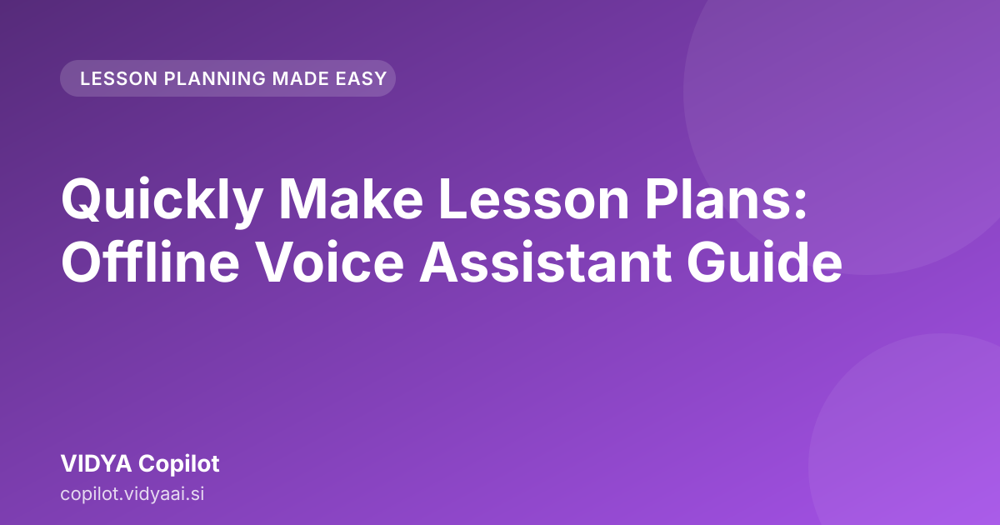

Quickly Make Lesson Plans: Offline Voice Assistant Guide

Tired of spending hours staring at a blank notebook trying to figure out how to make lesson plans quickly? For teachers in Maharashtra, balancing curriculum demands with daily classroom realities is challenging. This guide shows how to leverage an offline, voice-first tool to drastically cut down preparation time without needing a constant internet connection.
Why Traditional Lesson Planning Takes Too Much Time for Busy Teachers in Maharashtra
Teaching in Maharashtra requires thorough preparation. You must cover the prescribed syllabus, ensure students from diverse backgrounds understand the concepts, and integrate local context where appropriate. Traditional lesson planning often involves these steps:
- Syllabus Mapping: Checking the textbook, state board guidelines, and prescribed topics for the week.
- Idea Generation: Brainstorming engaging activities suitable for a typical classroom setting.
- Structuring: Writing clear objectives, selecting appropriate teaching aids, and designing assessment questions.
- Formatting: Copying and pasting this structure into a document, which consumes significant time.
For a teacher managing multiple subjects or classes, these tasks accumulate. By the time one detailed plan is complete, the requirements for the next day are already pressing. This manual process reduces the time available for interacting with students or planning innovative classroom activities.
The Challenge of Online Tools: When Internet and Time Are Limited
Many teachers look to online resources for fast lesson plan creation offline. While the internet provides extensive information, it has limitations relevant to daily school life.
The Connectivity Hurdle
In many parts of Maharashtra, reliable, high-speed internet access can be intermittent, particularly during peak usage times or in specific school locations. Relying solely on cloud-based AI tools means preparation halts when the Wi-Fi connection drops. This dependency creates unnecessary stress.
The Time Sink of Searching
Even when the internet is available, the sheer volume of results can be overwhelming. Time is spent filtering generic templates, reading irrelevant articles, or manually adjusting AI outputs to fit the specific context of a Marathi or Hindi-medium classroom. This searching constitutes unproductive time.
How an Offline Voice Assistant Streamlines Lesson Plan Creation
The shift to a specialized, offline tool offers a significant advantage. An offline voice assistant is designed for the practical workflow of a teacher. It functions locally on your device and does not require connection to the outside internet.
Voice-First Efficiency
Instead of typing complex prompts, you speak your requirements. This is beneficial when you are moving around the classroom, taking a brief break, or find speaking faster than typing. You dictate the needs, and the assistant manages the structuring.
Curriculum Alignment at Hand
The tool is trained on educational frameworks relevant to the Indian context, understanding the need for clear learning objectives and appropriate activity levels suitable for school-going children in Maharashtra. This makes it a powerful voice-assisted teaching preparation aid.
Step-by-Step Guide: Using Voice Commands for Instant Prep
A practical example of using a voice assistant for preparation is needed. Imagine you require a lesson on the water cycle for 7th-grade Science.
Step 1: Initiate the Command You speak clearly into the device. For instance: "Generate a lesson plan for Class 7 Science, topic Water Cycle, duration 45 minutes."
Step 2: Provide Context (The Voice Input) The assistant will prompt for details. You might respond: "The students need an activity involving local examples, and the assessment should be a quick worksheet."
Step 3: Refinement and Output The assistant processes these inputs. It structures the content based on your specific requirements, not just a generic outline. You can then ask follow-up questions such as, "Can you make the introduction more interactive?" or "Suggest three simple assessment questions."
This process, from initial idea to a structured draft, happens quickly, helping achieve quick lesson plan standards efficiently.
Structuring Your Lesson: What VIDYA Copilot Includes (Objectives, Activities, Assessment)
A strong lesson plan requires more than a list of topics; it needs a clear pedagogical flow. A dedicated tool helps ensure all critical components are present and logically connected.
Key Components Generated
When using a tool like VIDYA Copilot, it ensures the output covers these essential areas:
- Learning Objectives: Clear statements of what students will be able to do by the end of the class (e.g., "Students will be able to identify the three stages of the water cycle").
- Introduction/Hook: A ready-to-use activity or question to capture student attention immediately.
- Core Content Breakdown: Segmented teaching points that align with the allotted time.
- Classroom Activities: Concrete ideas—such as small group discussions, role-playing, or simple experiments—that fit the classroom environment.
- Assessment: A defined method to check understanding, whether through oral questioning or a short written task.
Lesson Plan Checklist
Use this quick checklist to ensure your generated plan is robust before entering the classroom:
| Component | Included in Draft? (Y/N) | Notes/Adjustments Needed |
|---|---|---|
| Clear Learning Objectives | ||
| Engaging Introduction | ||
| Step-by-step Procedure | ||
| Student Activity Integration | ||
| Formative Assessment Plan | ||
| Time Allocation Check |
Maximizing Your Productivity: From Draft to Classroom Ready in Minutes
The objective is to save time. By automating the drafting process, you move from spending a significant amount of time structuring a plan to spending a few minutes refining it.
Iterative Improvement
The true strength lies in iteration. If the first draft is too academic, you can simply speak: "Rewrite the activities to be more hands-on and less theoretical." The tool adapts. This rapid feedback loop drives teacher productivity tools offline. You are in control of the refinement process.
Saving Time on Worksheets
Beyond the main lesson plan, you can use the same voice assistant to generate accompanying materials. For instance, after the lesson plan is ready, you can ask: "Create a 10-question multiple-choice worksheet based on this lesson on the water cycle." This converts a lengthy task into a rapid sequence of voice commands.
Meet VIDYA Copilot: Your Instant Offline Teaching Partner
For teachers in Maharashtra who need reliable, fast, and context-aware lesson planning without worrying about internet stability, VIDYA Copilot is designed specifically for you. It brings sophisticated preparation tools to your device, working entirely offline. It helps you move beyond generic templates to create curriculum-aligned, engaging lessons instantly.
Discover how this offline voice assistant can transform your preparation time. Meet VIDYA Copilot $\rightarrow$ https://copilot.vidyaai.si/
Further reading across our network: SSC Math Chapter Wise Solutions: State Board Guide · Mahiti Board Science Study Tips: Master Science Offline
Conclusion
The shift towards leveraging AI in education is about removing the tedious, time-consuming administrative burdens so you can focus on teaching. By mastering the art of using an offline, voice-first assistant, you can master the skill of how to make lesson plans quickly and effectively. Stop spending evenings scrambling to meet deadlines. Start spending that time planning innovative, impactful moments in your classroom.
Frequently asked questions
Can I make lesson plans without an internet connection?
Yes, VIDYA Copilot is designed to work completely offline, ensuring you can prepare high-quality lesson plans even in areas with limited internet access.
How fast can I generate a lesson plan using this tool?
By using voice commands, you can drastically reduce manual typing and instantly generate structured drafts, saving significant time compared to traditional drafting methods.
Is the lesson plan output relevant to the Maharashtra curriculum?
The tool is designed with the needs of teachers in Maharashtra in mind, helping you create relevant and structured lesson plans that align with your teaching requirements.
How does an offline voice assistant help with lesson planning?
An offline voice assistant allows you to generate lesson plans using voice commands without needing an internet connection. This ensures uninterrupted preparation, even when Wi-Fi is unavailable.
Is this tool suitable for teachers in Maharashtra?
Yes, the tool is designed to address the specific needs of teachers in Maharashtra, helping them structure lesson plans while considering local classroom realities.